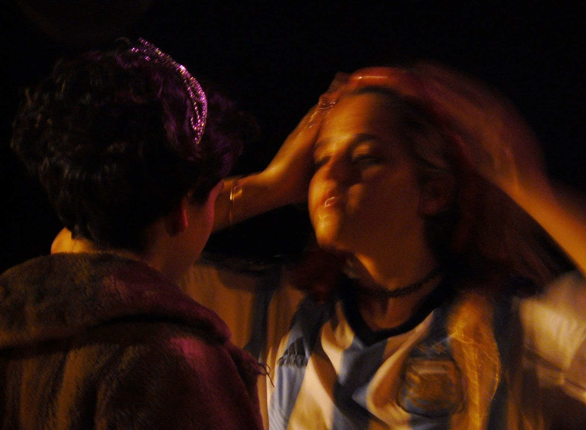

Baker’s Bakery, Puerto Rico 2017
PreciosaMalxriada
La banda interpreta su primer disco Música desde la Cárcel
Fiesta Jolié 2015
Electric Child, Makena, Bs As, 2016

Radio Colmena Club Cultural Matienzo 2016
Performance 2015 Auditorio C.C. Matienzo Festival CANCHA
Juana Rinaldi
Es actriz, música y estudiante de Artes de La Escritura en la UNA. Sus maestrxs de actuación han sido Feldman & Gobernori, Sabater, Romero, Lang, Briski, Herrera Nóbile y Pose. Trabajó con Marina Quesada, produciendo, co-guionando y actuando en la obra Si yo fuera yo ( La Hora de Clarice- Museo del Libro y de la Lengua , C.C.Matienzo, Festival LODO) siendo esta declarada de interés cultural por el Gob. de la Ciudad de Bs As y premiada con Mecenazgo. Protagonizó S/T, obra de Gael Policano Rossi dirigida por Santiago Nader (4000 caracteres-Cuadernos de Picadero del INT). Viajó a Puerto Rico para actuar en Part-Y presentándose en UPR Humacao, Escuela de Artes Plásticas de PR y Casa Ruth. Allì, colaboró en el fortalecimiento de nexos con artistas locales que intervinieron la pieza performàtica. Sus poesías fueron presentadas en el MAMBA y se han publicado en Hambre Web y en juanalabailanta.wordpress.com Ganó el concurso de poesía Texturas y viajó a Chile a visitar a las casas de Pablo Neruda. Parte de la compañía Copyleft (Prodanza 2016), gestada durante la Residencia LODO con la que fue premiada junto a Martín Tchira y otros, participó con performances propias en ciclos de C.C.Matienzo junto a Pablo Ragoni y como actriz del Festival Escena trabajando en intercambio con Bolivia junto a Lescano y Señorales. Actualmente forma la banda PreciosaMalxriada y graba un Disco para el sello DDR.